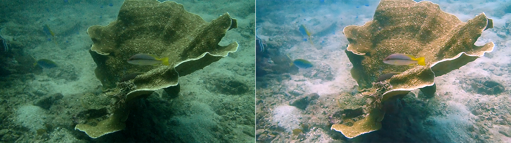

MyUnderwaterWorld: Intelligent Underwater Scene Representation
Underwater Scene Enhancement and 3D Modelling



(Left) Raw video by Piyapong Suwannakul and (Right) Processed video using VI-Lab tools. See video HERE
Aim
Our oceans have been explored for hundreds of years and these activities are becoming increasingly important because of the need to manage and conserve mineral and biological resources effectively, as well as to better understand planetary-scale processes including tectonics and marine hazards. Exploration and analysis are however always limited by the number of diving experts, technologies, and in particular, costs. Advanced imaging methods now support a new paradigm of remote discovery where onshore experts with specific knowledge, such as geologists, archaeologists and biologists, are able to remotely model and explore underwater scenes.
Underwater environment represents the combination of several challenges. Water is a dynamic medium and suspended particles move. Light scatter causes blur and halo effects, whilst light absorption leads to colour distortion and reduced contrast. The model of underwater imagery should thus comprise temporally- and spatially-variant distortion, uneven intensity bias, multiplicative noise, and additive noise. This project aims to exploit underwater image priors to perform 3D mapping process can be done directly from the raw underwater sequences.
Research team
Core
- N. Anantrasirichai: Lead academic
- Postdoctoral researcher: Recruiting
- Haoran Wang: PhD student
Undergrad/Postgrad projects
- Luca Gough (2023/2024), 3D Representations of Underwater Scenes using 3D Gaussian Splatting
- George Atkinson (2023/2024), Underwater image and video enhancement
Related research
Related publications from VI-Lab
- A unified framework for contextual lighting, colorization and denoising for UHD sequences . N Anantrasirichai and D R Bull. IEEE ICIP, 2021
- Artificial intelligence in the creative industries: A review. N Anantrasirichai and D R Bull, Artif Intell Rev 55, 2022
- ST-MFNet Mini: Knowledge distillation-driven frame interpolation. C Morris, D Danier, F Zhang, N Anantrasirichai, D R Bull. IEEE International Conference on Image Processing. 2023